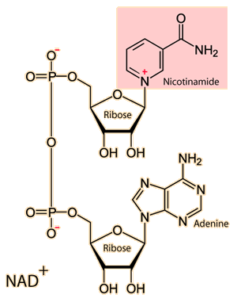
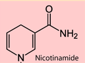

NAD (Nicotinamide adenine dinucleotide)
The cellular respiration processes of all living cells make use of the coenzyme Nicotinamide adenine dinucleotide (NAD). It plays a key role in energy metabolism by accepting and donating electrons.
|  | 
The low energy form NAD+ shown at left is raised to the high energy form NADH. The change in the form of the active nicotinamide group in NADH is indicated above. It accepts two electrons and a hydrogen in reaching the high energy state. The NAD+ is used in redox reactions in the cell and acts as a reducing agent. NADH contributes to oxidation in cell processes like glycolysis to help with the oxidation of glucose. |
The energy stored in this reduced coenzyme NADH is supplied by the TCA cycle in the process of aerobic cellular respiration and powers the electron transport process in the membranes of mitochondria.
|
Index
Organic chemistry concepts
Chemistry concepts
Reference
Karp
Ch 3 |